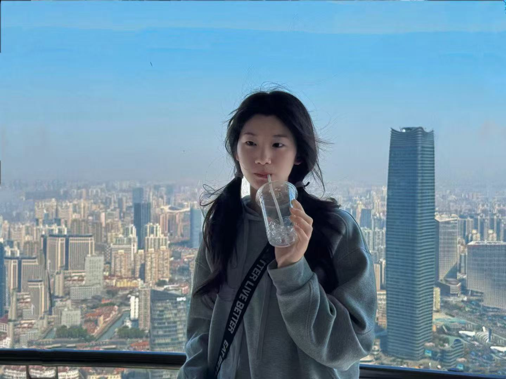
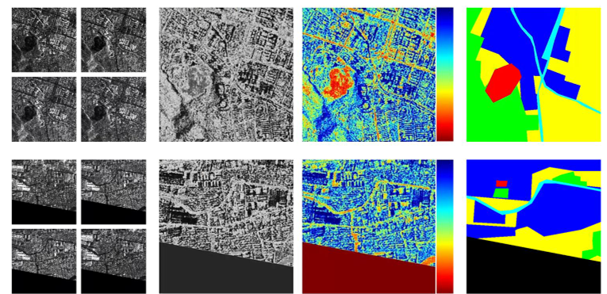
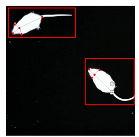

Jing Wu

Email
Github
LinkedIn
Google Scholar
About Me
Publications
Publications
Latest Update: 2026.06

MASA-SegNet: A Semantic Segmentation Network for PolSAR Images
Remote Sensing, 2023
Paper
Sun, J., Yang, S., Gao, X., Ou, D., Tian, Z.,
Wu, J.
, Wang, M.

A Large-Scale Mouse Pose Dataset for Mouse Pose Estimation
Symmetry, 2022
Paper
Sun, J.,
Wu, J.
, Liao, X., Wang, S., Wang, M.